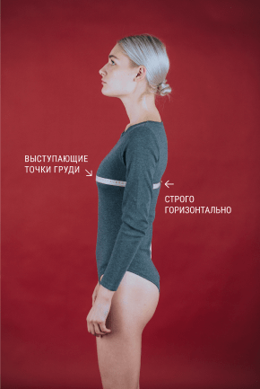
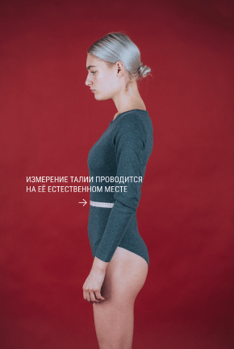
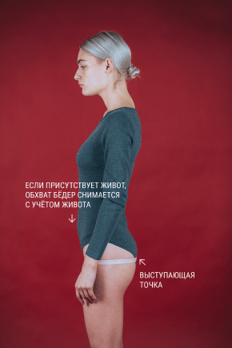
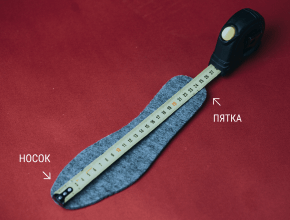

Как правильно снять мерки
и определить свой размер
Обхват груди
Измеряют полный обхват груди. Лента должна проходить горизонтально вокруг туловища через выступающие точки грудных желез.
Обхват талии
Измеряют полный обхват талии. Лента должна проходить горизонтально вокруг туловища на уровне линии талии.
Обхват бёдер
Измеряют полный обхват бедер, с учетом выступа живота. Лента должна проходить горизонтально вокруг туловища, сзади – по наиболее выступающим точкам ягодиц. Для более точного обмера выступа живота используют линейку.
Обувь
Измеряют полный обхват бедер, с учетом выступа живота. Лента должна проходить горизонтально вокруг туловища, сзади – по наиболее выступающим точкам ягодиц. Для более точного обмера выступа живота используют линейку.